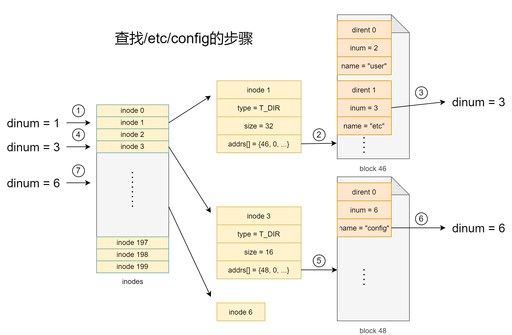

一些结构
// kernle/file.h
// 文件控制块
struct file {
enum { FD_NONE, FD_PIPE, FD_INODE, FD_DEVICE } type;
int ref; // reference count
char readable;
char writable;
struct pipe *pipe; // FD_PIPE
struct inode *ip; // FD_INODE and FD_DEVICE
uint off; // FD_INODE
short major; // FD_DEVICE
};
// kernel/fs.h
// 磁盘索引结点
struct dinode {
short type; // File type
short major; // Major device number (T_DEVICE only)
short minor; // Minor device number (T_DEVICE only)
short nlink; // Number of links to inode in file system
uint size; // Size of file (bytes)
uint addrs[NDIRECT+1]; // Data block addresses
};
#define NDIRECT 12
// kernel/file.h
// 内存索引结点
struct inode {
uint dev; // Device number
uint inum; // Inode number
int ref; // Reference count
struct sleeplock lock; // protects everything below here
int valid; // inode has been read from disk?
short type; // copy of disk inode
short major;
short minor;
short nlink;
uint size;
uint addrs[NDIRECT+1];
};
// kernel/fs.h
// 目录项
struct dirent {
ushort inum;
char name[DIRSIZ];
};
addition
Major number (主设备号)
Traditionally, the major number identifies the driver associated with the device. A major number can also be shared by multiple device drivers.
Minor number (次设备号)
The major number is to identify the corresponding driver. Many devices may use the same major number. So we need to assign the number to each device that is using the same major number.

目录查询
// kernel/fs.c
static struct inode*
namex(char *path, int nameiparent, char *name)
{
struct inode *ip, *next;
if(*path == '/')
ip = iget(ROOTDEV, ROOTINO);
else
ip = idup(myproc()->cwd);
while((path = skipelem(path, name)) != 0){
ilock(ip);
if(ip->type != T_DIR){
iunlockput(ip);
return 0;
}
if(nameiparent && *path == '\0'){
// Stop one level early.
iunlock(ip);
return ip;
}
if((next = dirlookup(ip, name, 0)) == 0){
iunlockput(ip);
return 0;
}
iunlockput(ip);
ip = next;
}
if(nameiparent){
iput(ip);
return 0;
}
return ip;
}
open系统调用
open()
void
ls(char *path)
{
char buf[512], *p;
int fd;
if((fd = open(path, 0)) < 0){
fprintf(2, "ls: cannot open %s\n", path);
return;
}
...
}
int open(const char* file, int omode);
-
file: 文件名，相对路径和绝对路径
-
omode: 打开方式
omode value 描述 O_RDONLY 0 只读 O_WRONLY 1<<0 只写 O_RDWR 1<<1 读写 O_CREATE 1<<9 新建 O_TRUNC 1<<10 删除 -
返回值: 一个整数表示文件描述符，打开失败返回-1
sys_open()
// kernel/sysfile.c
uint64
sys_open(void)
{
char path[MAXPATH];
int fd, omode;
struct file *f;
struct inode *ip;
int n;
// 取参数
argint(1, &omode);
if((n = argstr(0, path, MAXPATH)) < 0)
return -1;
// 表示开始一个事务
begin_op();
if(omode & O_CREATE){
ip = create(path, T_FILE, 0, 0);
if(ip == 0){
end_op();
return -1;
}
}
// 不需要新建
else {
// 获取目标文件的inode
if((ip = namei(path)) == 0){
end_op();
return -1;
}
ilock(ip);
// 目录只能以只读方式打开
if(ip->type == T_DIR && omode != O_RDONLY){
iunlockput(ip);
end_op();
return -1;
}
}
// 设备文件
if(ip->type == T_DEVICE && (ip->major < 0 || ip->major >= NDEV)){
iunlockput(ip);
end_op();
return -1;
}
// 分配文件控制块和文件描述符
if((f = filealloc()) == 0 || (fd = fdalloc(f)) < 0){
if(f)
fileclose(f);
iunlockput(ip);
end_op();
return -1;
}
// 设备文件
if(ip->type == T_DEVICE){
f->type = FD_DEVICE;
f->major = ip->major;
}
// 文件或目录
else {
f->type = FD_INODE;
f->off = 0;
}
f->ip = ip;
// 非只写
f->readable = !(omode & O_WRONLY);
// 只写或可读可写
f->writable = (omode & O_WRONLY) || (omode & O_RDWR);
// 删除文件
if((omode & O_TRUNC) && ip->type == T_FILE){
itrunc(ip);
}
iunlock(ip);
// 结束一个事务
end_op();
// 返回文件描述符
return fd;
}
create()
// kernel/sysfile.c
static struct inode*
create(char *path, short type, short major, short minor)
{
struct inode *ip, *dp;
char name[DIRSIZ];
// struct inode* nameiparent(char *path, char *name)
// 返回path的父目录的inode和目标文件的name
// e.g., path="/etc/apt/config"
// dp = inode("/etc/apt/")
// name = "config"
if((dp = nameiparent(path, name)) == 0)
return 0;
ilock(dp);
// struct inode* dirlookup(struct inode *dp, char *name, uint *poff)
// 查询dp目录下name文件的inode
if((ip = dirlookup(dp, name, 0)) != 0){
iunlockput(dp);
ilock(ip);
if(type == T_FILE && (ip->type == T_FILE || ip->type == T_DEVICE))
return ip;
iunlockput(ip);
return 0;
}
// 若文件不存在
// 分配inode
if((ip = ialloc(dp->dev, type)) == 0){
iunlockput(dp);
return 0;
}
// 设置inode
ilock(ip);
ip->major = major;
ip->minor = minor;
ip->nlink = 1;
// 将ip写入到磁盘
iupdate(ip);
// 目录文件
if(type == T_DIR){ // Create . and .. entries.
// No ip->nlink++ for ".": avoid cyclic ref count.
if(dirlink(ip, ".", ip->inum) < 0 || dirlink(ip, "..", dp->inum) < 0)
goto fail;
}
// 添加目录项
if(dirlink(dp, name, ip->inum) < 0)
goto fail;
if(type == T_DIR){
// now that success is guaranteed:
dp->nlink++; // for ".."
iupdate(dp);
}
iunlockput(dp);
// 未释放ip的锁
return ip;
fail:
// something went wrong. de-allocate ip.
ip->nlink = 0;
iupdate(ip);
iunlockput(ip);
iunlockput(dp);
return 0;
}
file descriptor (文件描述符)
// kernel/sysfile.c
static int
fdalloc(struct file *f)
{
int fd;
struct proc *p = myproc();
// NOFILE: 每个进程最多打开文件数
for(fd = 0; fd < NOFILE; fd++){
if(p->ofile[fd] == 0){
p->ofile[fd] = f;
// 文件描述符即为下标
return fd;
}
}
return -1;
}
struct proc {
...
int pid; // Process ID
struct file *ofile[NOFILE]; // Open files
struct inode *cwd; // Current directory
...
};